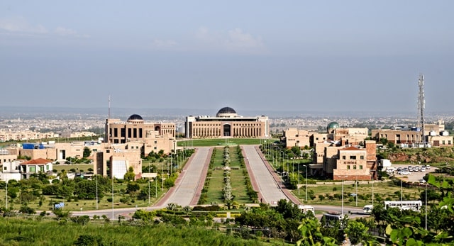
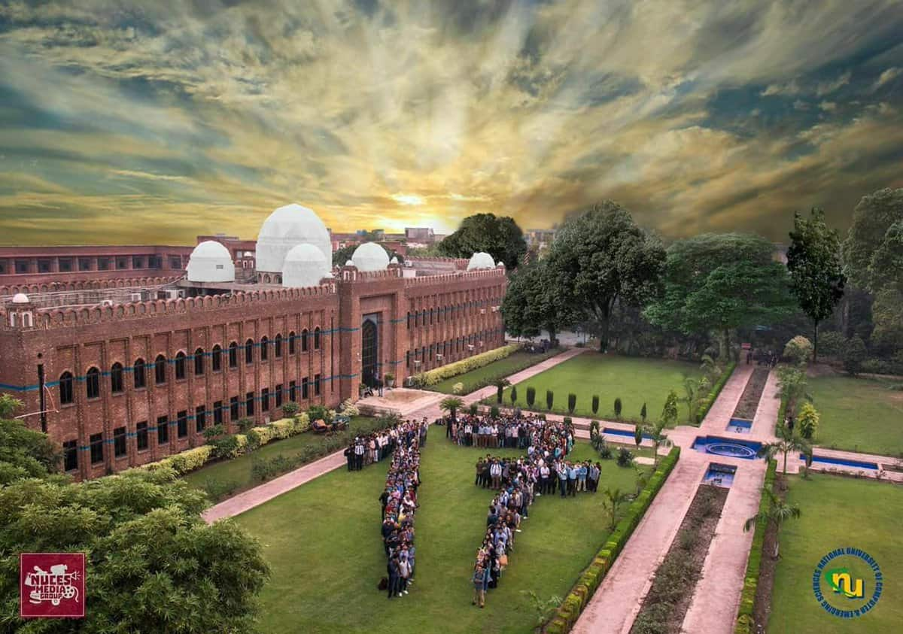
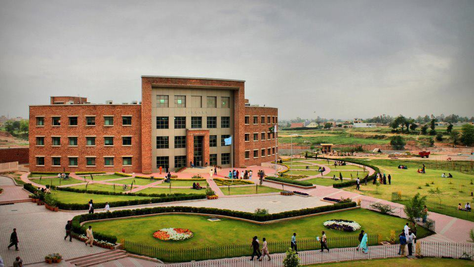
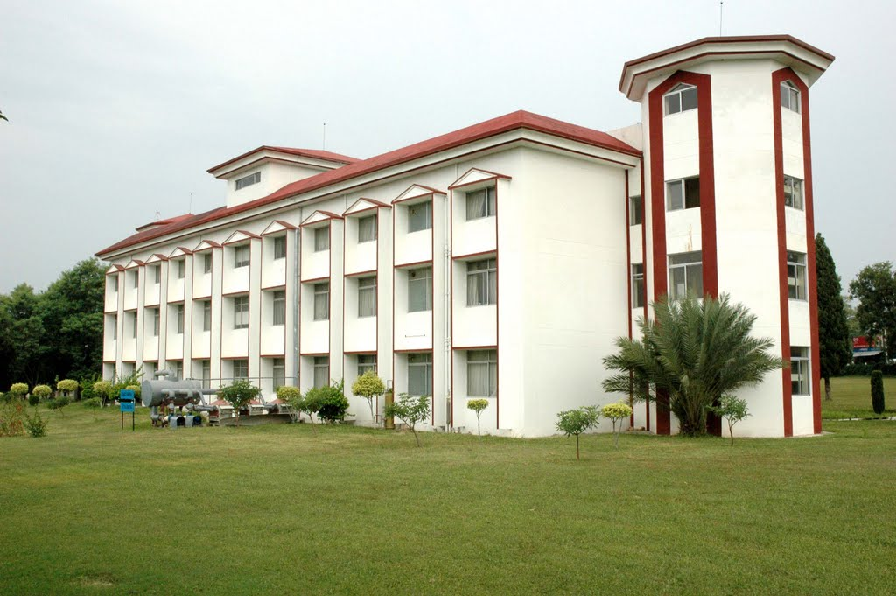
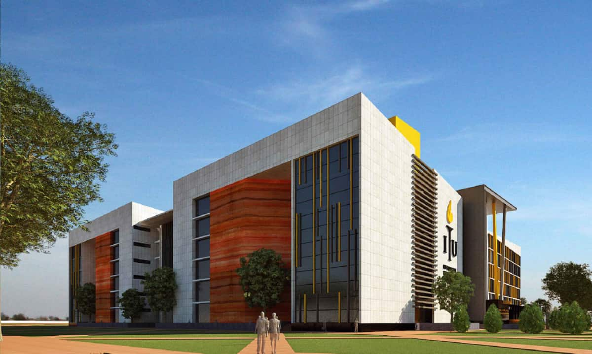
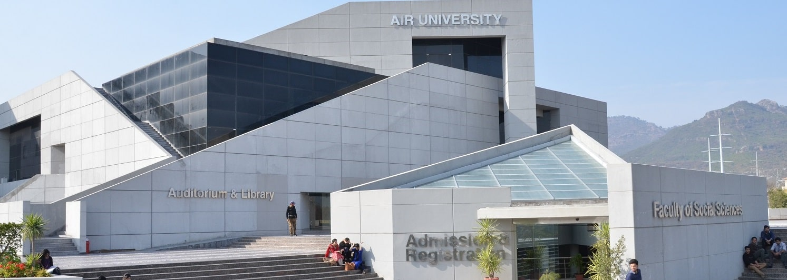
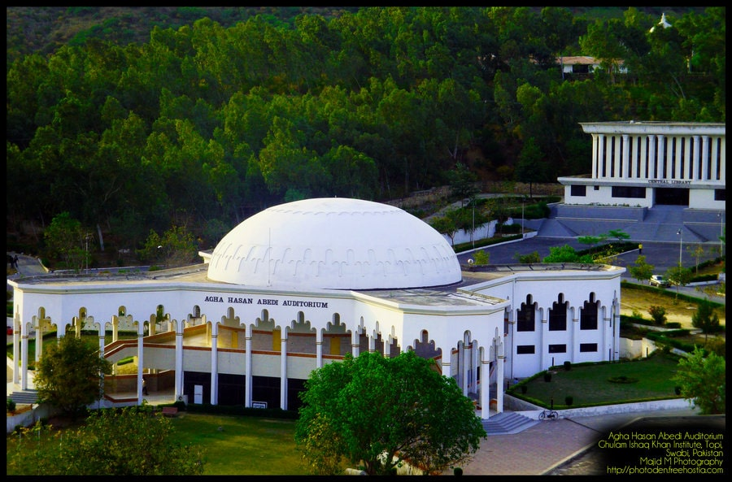
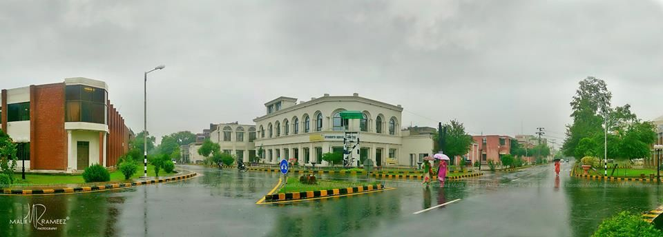
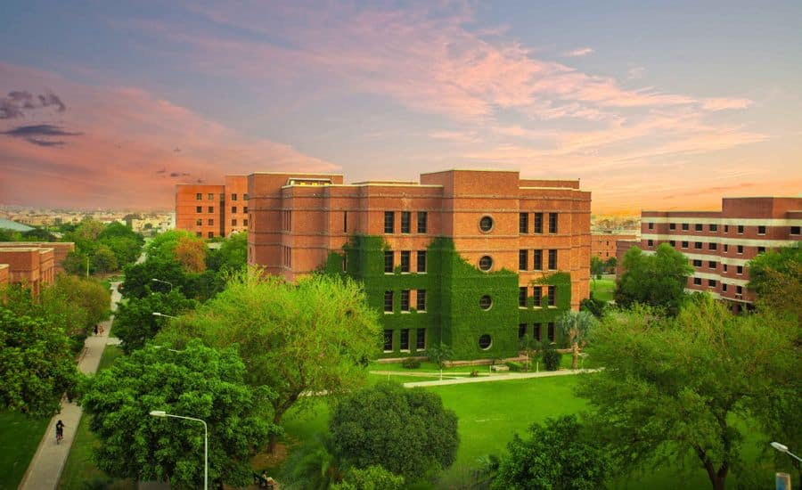

Best Computer Science Universities
Computer science is one of the most popular fields in the World today.
Most students want to go in computer science due to its increased scope in
the past few years. Computer science is the study of computing
technologies, both hardware and software. It is although complicated due
to programming and algorithms, however if the university is selected
wisely, there would be no worries. There are a lot of universities
offering bachelor’s in computer science so choosing the right university
is a difficult decision. In this article for those students who want to
study computer science in future, we have organized top universities in
Pakistan for CS.
1. National University of Science and Technology (NUST), Islamabad

Address: H-12, Islamabad, Islamabad Capital Territory, Pakistan
Visit on Google Maps:
Visit
Phone number: +92 51 90852400
Email Address:
ugaadmissions@nust.edu.pk
Fee Range: 110000 PKR Per Semester
NUST is no doubt the best university of engineering, technology and
computer science in Pakistan. NUST School of Electrical Engineering and
Computer Sciences (SEECS) gives education in computer science and software
engineering of international standard. The school was established in 1999
as NUST Institute of Information and Technology.
2. FAST NUCES Lahore

Address: FAST, Lahore
Visit on Google Maps:
Visit
Phone Number: (051) 111 128 128
Fee Range: 272000 PKR Annually
Alumni: Fawad Afzal Khan, Farhan Saeed, Xulfi, Mir Zafar Ali,
Osman Khalid Butt, Hania Aamir
FAST is one of the best universities of computer science in Pakistan. It
was established in 2000 by former President and Army Chief of Pakistan
General Pervaiz Musharraf.The university has five campuses in the whole
country but the best one is in Islamabad. FAST has a very difficult
semester system and considerable number of students fail to pass the
semester. FAST has currently 11000 students enrolled.
3. Punjab University College of Information Technology
 Address: Katchery Road، Near Anarkali Bazar، Lahore
Address: Katchery Road، Near Anarkali Bazar، Lahore
Visit on Google Maps:
Visit
Phone Number: (042) 111 923 923
Email Address:
webmaster@pucit.edu.pk
Punjab University College of Information Technology is one the top
universities for computer science located in Lahore, Pakistan. PUCIT was
established in 1988 with the name Centre for Computer Science.The
university has a lot of club and societies for students. Library and a
total of 800 plus computers lab is offered to students. PUCIT is the best
institution for computer science in Lahore with 5000 students enrolled.
4. Comsats University Islamabad

Address: Park Rd, Islamabad, Islamabad Capital Territory
Visit on Google Maps:
Visit
Phone Number: (051) 9247000
Email Address:
rizwan_ahmed@comsats.edu.pk
Fee Range: 174,000 PKR Annually
Comsats University Islamabad is one the best universities for computer
science in Pakistan. It was established in 1998 by Commission on Science
and Technology for Sustainable Development in the South (COMSATS). Apart
from the main campus in Islamabad, it has campuses in Lahore, Vehari,
Attock, Sahiwal, Abbottabad and Wah.The university currently has 8500
students enrolled in Islamabad and 30,000 students enrolled in other 6
campuses. As of QS Rankings 2014, the university is ranked among top 250
universities in Asia.
5. Pakistan Institute of Applied Sciences (PIEAS)

Address: Lehtrar Rd, Nilore, Islamabad, Islamabad Capital Territory
Visit on Google Maps:
Visit
Phone Number: (051) 111 174 327
Email Address:
registrar@pieas.edu.pk
Alumni: Munir Ahmad Khan (former PAEC Chairman), Dr. Masood Ahmad, Dr.
Samar Mubarakmad, and Dr. Waqas Ahmad
PIEAS is one the best universities of Pakistan in engineering and computer
sciences. It was established in 1967 as Reactor School. The university is
sponsored by Pakistan Atomic Energy Commission. The university covers 150
acres of land and has only one campus in Nilore, Islamabad. The university
currently has 1100 students enrolled. Like NUST, PIEAS is also very
selective university and a lot of hard work is required in order to get
into it. As of QS Rankings 2019, PIEAS is ranked 397th worldwide, 146th in
Asia and best in Pakistan.
6. Information Technology University

Address: ARFA Tower, Ferozepur Road, Nishtar Town, Lahore, Punjab
Visit on Google Maps:
Visit
Phone Number: (042) 35880062
Email Address:
admission@itu.edu.pk
Information Technology University is one of the best and emerging
universities in Pakistan. It is located within Arfa Software Technology
Park, while its 183-acre campus is under construction at Barki Road in
eastern Lahore. ITU was founded in 2012 by Umar Saif who previously taught
at Cambridge-MIT Institute.The university has varying degrees of
partnership with Harvard University and maintains partnerships with EdX,
IBM and US state edition. The university has more than 700 students
enrolled. Between 2013 and 2016, the university has conducted PKR 700
million in research.
7. Air University

Address: E-9, Islamabad, Islamabad Capital Territory
Visit on Google Maps:
Visit
Phone Number: (051) 9262557
Email Address: ao@mail.au.edu.pk
Fee Range: 81,800 PKR per semester
Air University is one of the best universities for computer science in
Islamabad. It was established in 2002 by Pakistan Air Force (PAF). The
university also has a campus in Multan. The university is included in
country’s top ten universities by HEC.
8. Ghulam Ishaq Khan Institute of Engineering, Sciences and Technology

Address: District Swabi, Khyber Pakhtoon Khwa، Topi, Swabi, Khyber
Pakhtunkhwa
Visit on Google Maps:
Visit
Phone Number: (0938) 271858
Email Address: ismat@giki.edu.pk
Fee Range: 387,500 PKR per semester
Alumni: Dr. Yarjan Abdul Samad, Taimur Khan Jhagra
GIKI is a private elite university located in Topi, Swabi, KPK. It was
founded by former President Ghulam Ishaq Khan in 1993. The country’s most
influential scientists e.g. Abdul Qadeer Khan, Asghar Qadir and Shaukat
Hameed Khan played a formulating role in elevating the institute.
9. University of Engineering and Technology

Address: G.T Road, Staff Houses Engineering University Lahore, Lahore,
Punjab
Visit on Google Maps:
Visit
Phone Number: (042) 99029227
Email Address:
registrar@uet.edu.pk
Alumni: Ahsan Iqbal, Mehreen Faruqi, Fawad Rana, Junaid Jamshed, Faakhir
Mehmood
University and Engineering and Technology (UET) is the one of the most
prestigious and highly ranked universities in Pakistan. It was established
in 1921 as Mughulpura Technical College. With main campus in Lahore, UET
has other campuses in different cities of Pakistan.
10. Lahore University of Management and Sciences

Address: DHA Phase 5, Cantt, Lahore, Punjab
Visit on Google Maps:
Visit
Phone Number: (042) 35608000
Email Address:
admission@lums.edu.pk
Alumni: Umar Saif, Hina Rabbani Khar, Adil Najam, Arif Zaman, Amer Iqbal,
Ayesha Jalal, Asad Abidi, Osama Siddique, and Pervaiz Hoodbhoy Lahore
University of Management Sciences is a private and not-for-profit research
university. It was founded by Syed Babar Ali in 1984 and since then
expanded launching different schools with the span of time.